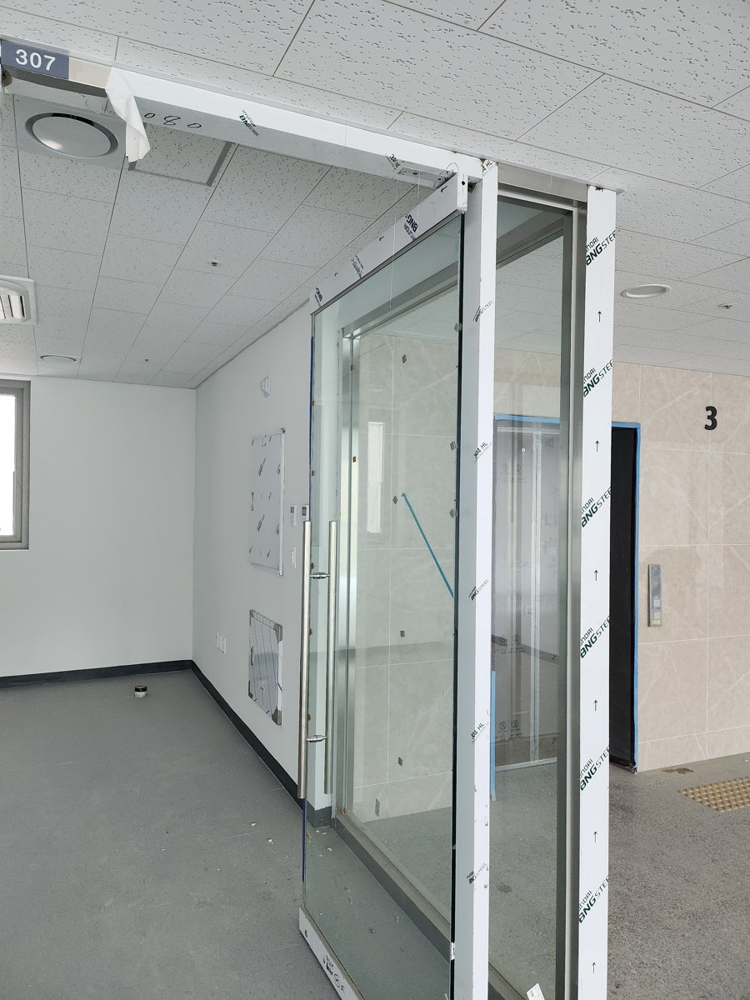
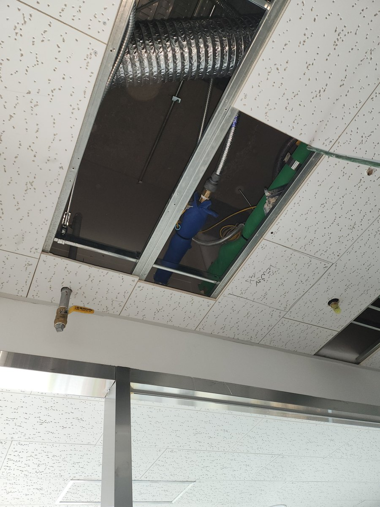
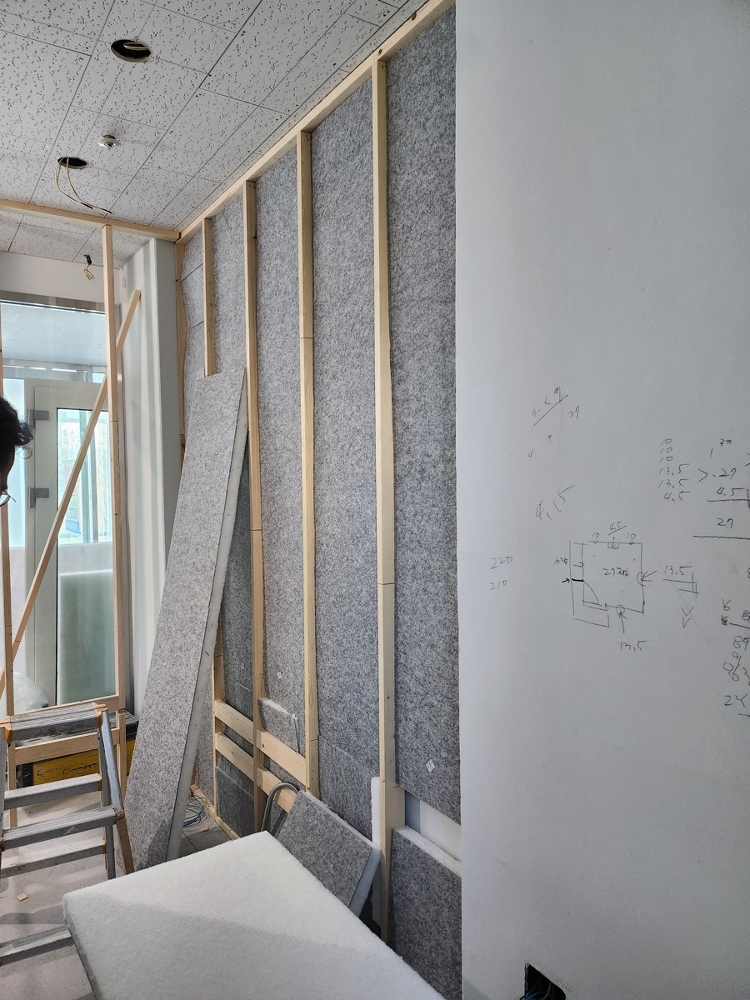
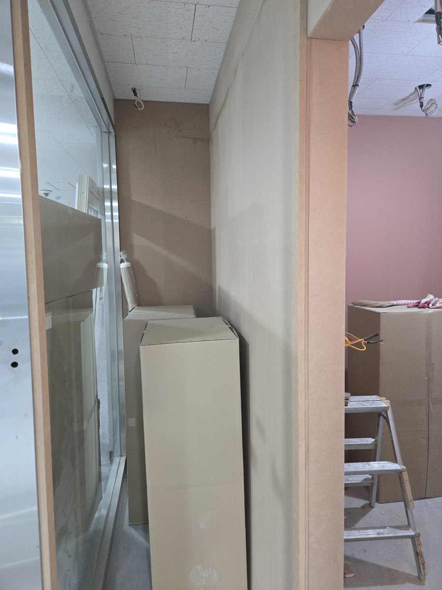
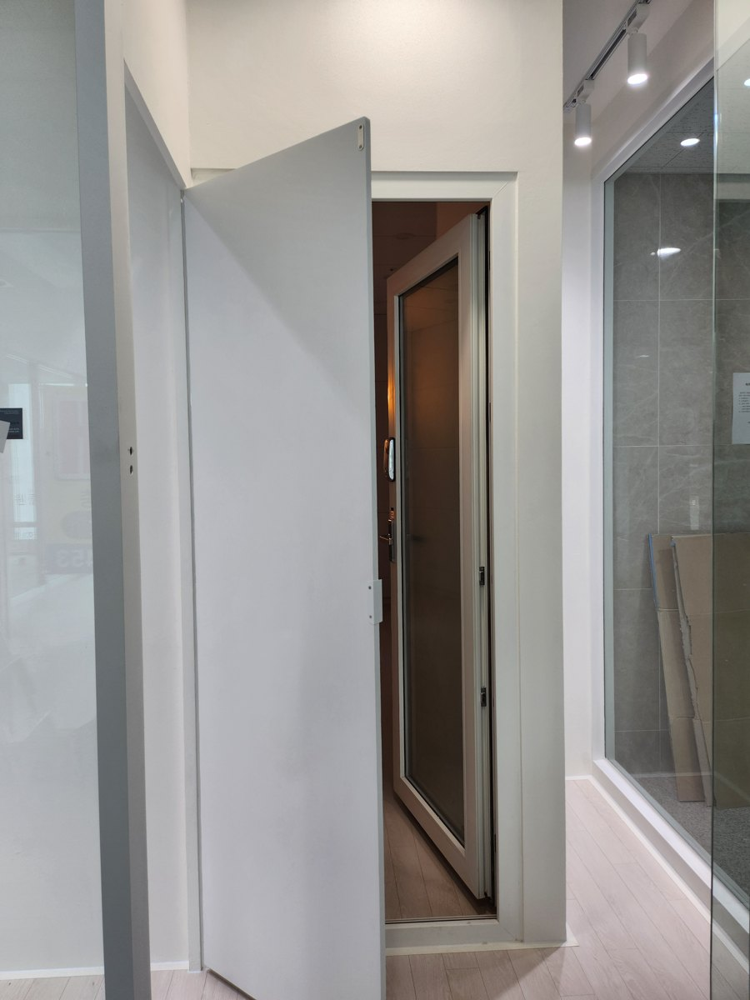
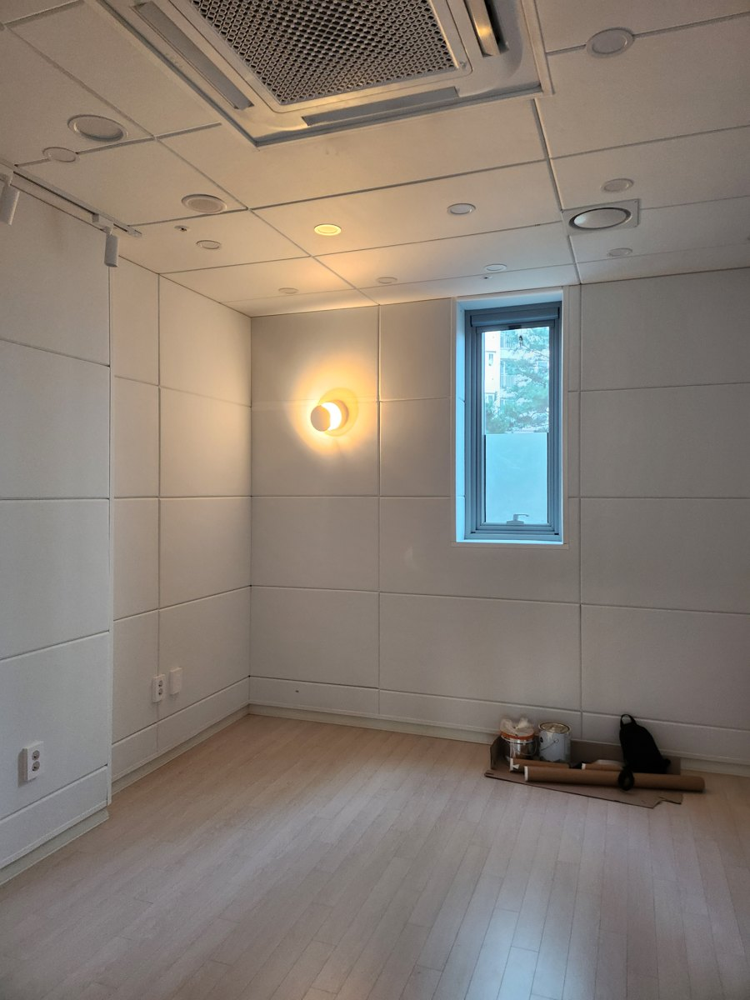
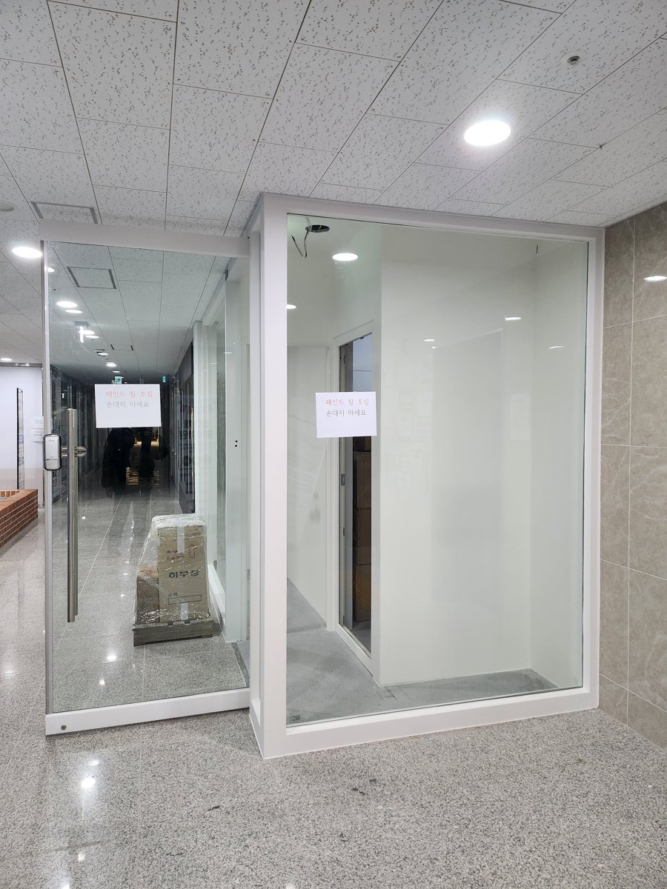

서울 서초 잠원동 · 신반포스퀘어
같은 상가에서 맡은 두 번째 교습소입니다. 좁은 평수인데도 레슨실 앞에 전실을 냈습니다. 문 하나로 복도와 맞붙으면 문이 열리는 그 순간 소리가 통째로 나가는데, 전실이 있으면 문과 문 사이에서 한 번 걸립니다. 벽보다 먼저 손본 건 천장 속이었습니다. 상가 호실은 벽이 천장 마감선까지만 올라가 있어 그 위가 옆 호실과 뚫려 있습니다.







이 현장의 방음문은 새 제품이 아닙니다. 같은 상가의 피아노 교습소 원장님이 쓰시던 두 짝 중 한 짝을 옮겨 달았습니다. 시스템 방음문은 문짝과 문틀이 멀쩡하면 몇 번이든 다시 쓸 수 있습니다. 철거 전에 연락을 주시면 어느 것을 살릴 수 있는지 보고 치수를 재둡니다.
문의
010-4867-4442
실측과 상담은 비용을 받지 않습니다. 방음문 한 짝 교체는 99만원부터이고, 기존 문 철거는 별도입니다.
상담부터 시공까지 보통 2~3주.
상담 → 실측 → 제작 → 일정 조율 → 시공 순서로 갑니다.
방음문은 치수를 받아 만드는 제품이라 대부분의 시간이 제작 기간입니다.